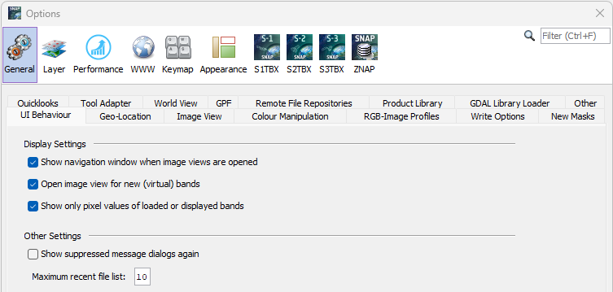

The Options dialog window contains several categories of settings you are able to change.
In the following sections screen shots are shown where the settings for the user interface behavior can be edited.
Depending on the number of Toolboxes installed in SNAP, the header area might contain different items.
The buttons "Export" and "Import" in the footer area of the dialog window can be used to save or load all settings
at once.
This preferences page contains general user interface behavior and memory
management settings.

Show navigation window when image views are opened
If an image view is opened the Navigation Window
will also be opened.
Open image view for new (virtual) bands
Currently, this option only affects the Band
Maths tool. If this option is selected, a new image view is automatically
created and opened for any new bands created in the band maths tool.
Show only pixel values of displayed bands
If selected, the pixel info view will only show pixel values of bands
which are currently displayed in an image view. If this option is not selected,
the Sentinel Toolbox displays all bands contained in a product.
For those bands which are currently not displayed, the Sentinel Toolbox reads the sample values directly
from the product file. Depending on your computer's I/O performance and the
location of the product file (e.g. CD-ROM, harddrive, network) this can have
an impact on the runtime performance.
Maximum recent file list
Specify the number of recent files that appear in the File Menu under "Reopen
Product".
Show suppressed message dialogs again
Some dialogs of the Sentinel Toolbox can be disabled by checking the option "Don't show
this message again". You can select this option to enable all message and tip dialog boxes again.
This preferences page enables settings related to the geo-location of pixels, pins, etc.
The Sentinel Toolbox uses an image coordinate system whose origin (x=0, y=0) is the upper left corner of the
upper left pixel. Image X-coordinates increase to the right, Y-values increase downwards.
The center of the pixel in the origin is then located at (x=0.5, y=0.5).
Snap pins to exact geo-location after import, transfer to another product, or geo-coding change
Enables pins to be displayed at exact location on the image.
Use sub-pixel fraction accuracy for pixel-based geo-coding
When geo-coding is pixel-based, a sub-pixel fraction accuracy shall be used (see also "Show pixel coordinates with fractional part" below).
Use high precision approximations for inverse tie point geo-coding
When geo-coding is tie-point based, high precision inverse approximations are used. Enabling this option slows
down the performance
but increases the accuracy a bit further.
Show geographical coordinates in decimal degrees
Use decimal degree values instead of minutes and seconds.
Show pixel coordinates with fractional part
Don't display integer coordinates.
Show pixel coordinates starting at (1,1)
In opposite to the default setting where the pixel coordinates start at (0,0), let them count from (1,1).
This preferences page enables settings related to the geo-location of pixels, pins, etc.
Show a navigation control widget in image views
If this option is selected, the Sentinel Toolbox shows a navigation widget in image views
for moving and rotating images within the viewport:
Show scroll bars in image views
If this option is selected, image views are shown with horizontal and
vertical scroll bars.
Invert mouse wheel scrolling (zoom in/zoom out)
For convenience, zoom in or out like e.g. in Google Earth.
This preference page is used to edit the RGB profiles used for RGB image creation
from various product types. An RGB-Profile defines the band maths expressions
to be used for the red, green and blue components of an RGB image.
For detailed information about RGB-Profiles please refer to the chapter
RGB-Image Profile located at Sentinel Toolbox Application/Tools/Imaging
Tools
Profile Lets you Select on of the actual stored RGB-Profiles to use for creation of the new image view.
Use the to save the currently displayed RGB-Profile.
Use the to delete the currently displayed
RGB-Profile.
RGB Channels
Red - Defines the mathematical expression for the red channel.
Green - Defines the mathematical expression for the green channel.
Blue - Defines the mathematical expression for the blue channel.
Use the to
to edit the expression for the specific channel by using the Maths Expression
Editor.
Note:
The expressions are not validated by the Sentinel Toolbox, keep care of using the correct syntax.
Please refer to the Maths Expression Editor
documentation for the syntax and capablities of expressions.
This preference page is used to edit the writing behaviour of SNAP.
The first four entries are only relevant when products are saved in
BEAM-DIMAP format.
Save product header (MPH, SPH)
This options allows you to include/exclude the main product header (MPH) and
specific product header (SPH) of ENVISAT products in/from the file being saved.
If this option is selected, the Sentinel Toolbox stores the MPH and SPH as meta-data in the
BEAM-DIMAP (XML) header.
It is recommended to always include this meta data.
Save product history (History)
This option switches the saving of the processing history of the product on
or off. It is recommended to always include this meta data to be able to track
the processing stages and the original product.
Save product annotation data sets (ADS)
This options allows you to include/exclude all annotation data sets (ADS) of
ENVISAT products in/from the file being saved. If this option is selected,
The Sentinel Toolbox stores ADS as meta-data in the BEAM-DIMAP (XML) header.
For ENVISAT products, location and annotation data sets (provided at tie-points)
need not to be stored as meta data, since the Sentinel Toolbox automatically converts them
into tie point grids, which are separately saved.
Use incremental Save
If this option is selected (recommended), the Sentinel Toolbox will only save the modifications
applied to a product, such as band modified or created with band maths
tool or the removal of bands.
Enable DIMAP write cache
If this option is selected (recommended), all data written to DIMAP file format will be cached before
accessing the storage medium. This allows for a disk access schema suited for the dataformat and thus
in most cases a higher data throughput.
The last element generally concerns the writing process and thus also all writeable formats.
Write raster data concurrently
If this option is selected (recommended), the write operation uses the processor cores in parallel
to write raster data. This can dramatically speed up the write process. However, it can also cause
problems if the writer is not implemented thread save.
If the data cannot be written in parallel, please disable this option.
This preference page is used to edit the default mask overlay colour and its transparency.
Default mask overlay colour - Sets the default colour for newly created masks. Select a colour from a
pre-defined list or customize it.
Default mask overlay transparency - Sets the default transparency for newly created masks. Enter a value
between 0 and 1. 0 means opaque, 1 means transparent.
World Map Layer - Select the layer type from a list. Available options:
Performance Settings
This preferences page contains settings for the Java VM and processing parameters.
Both settings might be computed by SNAP or being reset to default values.
VM Parameters - Please refer to
.
Cache path - Path to the SNAP cache directory.
Cache Size (MB) - Maximum size of the SNAP cache directory.
If you are behind a proxy you should configure your settings here.
You are able to configure the settings for different protocols or check the box to use the same settings for all
protocols.
HTTP Proxy - Enter the HTTP proxy server address and the port.
HTTPS Proxy - Enter the HTTPS proxy server address and the port.
SOCKS Proxy - Enter the SOCKS proxy server address and the port.
Use HTTP proxy authentication
If your proxy requires authentication enable this option.
In this preference page you are able to change or create keystrokes for actions within SNAP. Keymap settings can be
edited, stored and managed with this dialog.
Preferred look and feel - Select your favourite look-and-feel from a list. Note that the activation requires a restart of SNAP.
Maximize use of native look and feel - NetBeans uses native UI components when those offer sufficient functionality.
Select this option to force the use of native components, even when that may limit functionality (e.g. macOS file chooser).